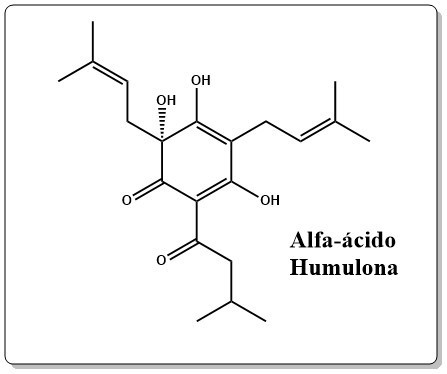
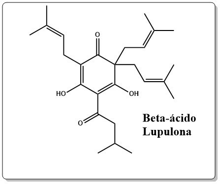
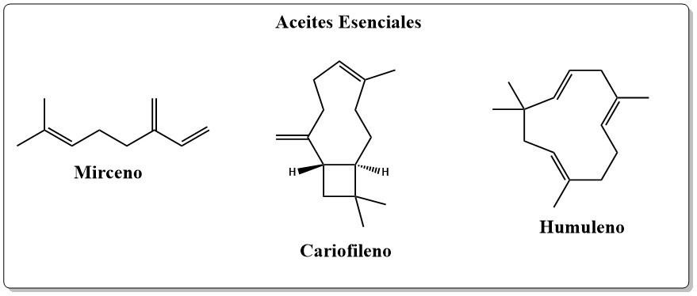

CERVEZA 🍺
La cerveza es un líquido de malta dulce o fermentada saborizada con lúpulo, fabricada de forma natural. Sus principales ingredientes son cebada, lúpulo, levadura y agua, y el agua con que se la prepara debe ser pura, estéril y potable. Contiene también cebada, que debe ser germinada, secada y tostada, el lúpulo, que le da aroma amargo, y la levadura, que permite su fermentación. Acompaña muy bien las comidas por su sabor amargo y contenido carbónico, y tiene además propiedades medicinales: es antioxidante y protege las células de su degradación. De ella se conocen varios tipos con una amplia gama de matices, debidos a las diferentes formas de elaboración y a los ingredientes utilizados. Generalmente presenta un color ambarino con tonos que van del amarillo oro al negro pasando por los marrones rojizos. Se la considera «gaseosa» (contiene CO2 disuelto en saturación que se manifiesta en forma de burbujas a la presión ambiente) y suele estar coronada de una espuma más o menos persistente. Su aspecto puede ser cristalino o turbio. Su graduación alcohólica puede alcanzar hasta cerca de los 20 % vol., aunque comúnmente se encuentra entre los 4 % y los 6 % vol.
La fermentación de la cerveza gira en torno al metabolismo que realizan las levaduras para degradar azucares como la glucosa, conocido como fermentación. Es un proceso que se lleva a cabo ya sea por una ausencia de oxígeno, o porque el organismo en cuestión no posee la habilidad para utilizarlo. Por ejemplo, Saccharomyces cerevisiae comúnmente conocida como «la levadura de la cerveza» es un organismo anaeróbico facultativo, lo que implica que puede hacer tanto fermentación como respiración aeróbica (uso de oxígeno). Es por lo tanto el principal responsable de la fermentación de la cerveza.
El proceso de fermentación, es uno de los metabolismos mejor estudiados, además de ser relativamente sencillo de entender. El desarrollo de la fermentación se lleva a cabo sin la utilización de oxígeno, pero eso no indica que sea un tipo de respiración anaeróbica, puesto que en este proceso se lleva a cabo una oxidación a nivel de sustrato, en otras palabras, no se utiliza un compuesto exterior como el oxígeno en la respiración aeróbica, sino compuestos producidos por el organismo.
La fermentación alcohólica consta de 2 pasos: El piruvato, compuesto formado en la glucólisis que sufre una descarboxilación perdiendo un carbono que se libera en forma de dióxido de carbono -CO2-, con lo que se forma una nueva molécula llamada acetaldehído (4). El NADH formado de la transformación de la glucosa a piruvato -glucólisis-, oxida al acetaldehído para pasar de NADH a NAD+. Esta es la oxidación a nivel de sustrato, comentada anteriormente. Para poder repetir el proceso, el último compuesto se convierte en etanol.
La clave de la amargura de la cerveza se encuentra en dos tipos de compuestos orgánicos que se encuentran en los lúpulos añadidos a la mezcla:
–Alfa-ácidos:entre los que se encuentran la humulona, cohumulona, adhumulona, posthumolona y prehumolona son los principales responsables de la amargura de la cerveza. El alfa-ácido mayoritario en los lúpulos es la humolona, aunque los lúpulos varían en su composición y puede ser seleccionados para modificar las propiedades de la cerveza. Durante el proceso de fermentación estos compuestos son degradados a sustancias más solubles que contribuyen a la amargura asociada a la cerveza.
–Beta-ácidos: hay tres clases principales: lupulona, colupulona y adlupulona. Los beta-ácidos son responsables de una amargura más penetrante que los alfa-ácidos, pero al ser menos solubles en la mezcla su contribución es menor. Los beta-ácidos actúan más despacio que los alfa-ácidos por lo que sus efectos son mayores si el tiempo de fermentación es mayor. Los alfa- y beta-ácidos también son responsables de otras propiedades de la cerveza. Ambos son antisépticos por lo que impiden la formación de bacterias y prolongan la vida de la cerveza. Los alfa-ácidos pueden causar efectos no deseados si no se tiene cuidado en el proceso de fermentación. Algunos de los productos de degradación de los alfa-ácidos si son expuestos a la luz pueden originar compuestos que dan un sabor desagradable a la cerveza. Por esa razón, la cerveza siempre se almacena en contenedores opacos o recipientes de cristal tintado
Los lúpulos también contienen aceites esenciales que son responsables del aroma y sabor y de la cerveza. Se han detectado unos 250 tipos de aceites esenciales diferentes en los lúpulos. Los que se encuentran en mayor concentración son: mirceno, humuleno y cariofileno. El humuleno es responsable del aroma de lúpulo característico de la cerveza, el mirceno agrega aromas cítricos y el cariofileno contibuye a dar sabor especiado.
precentado por: